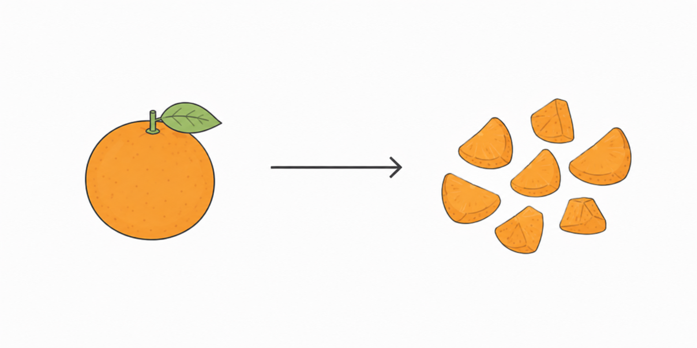
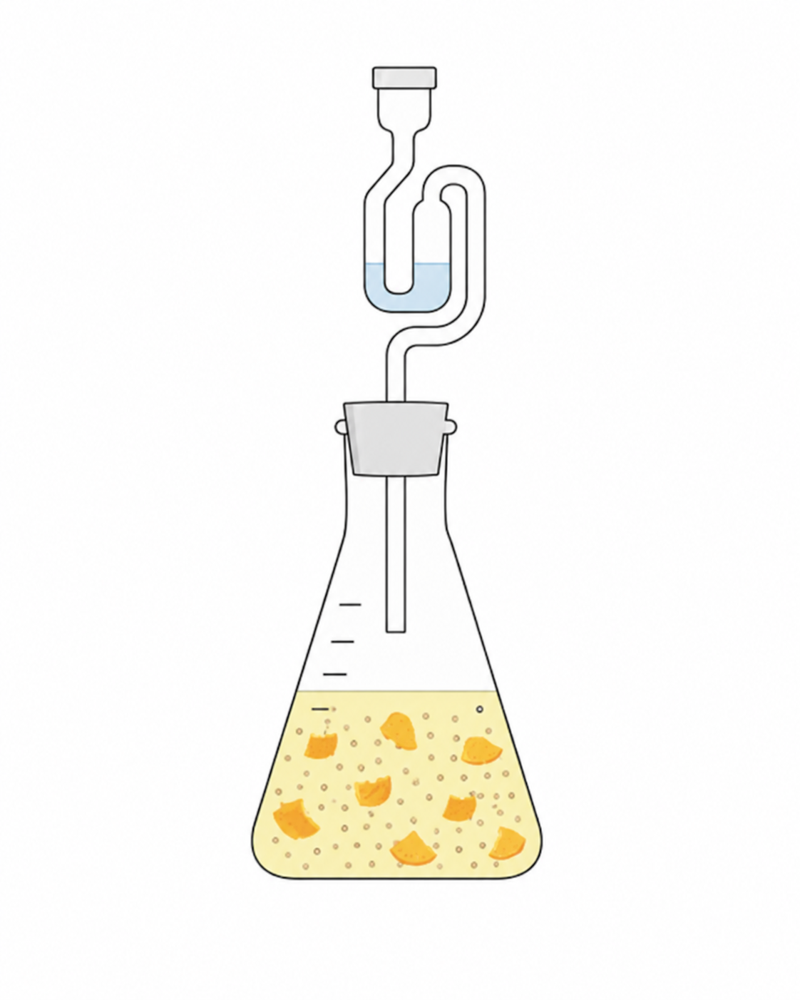
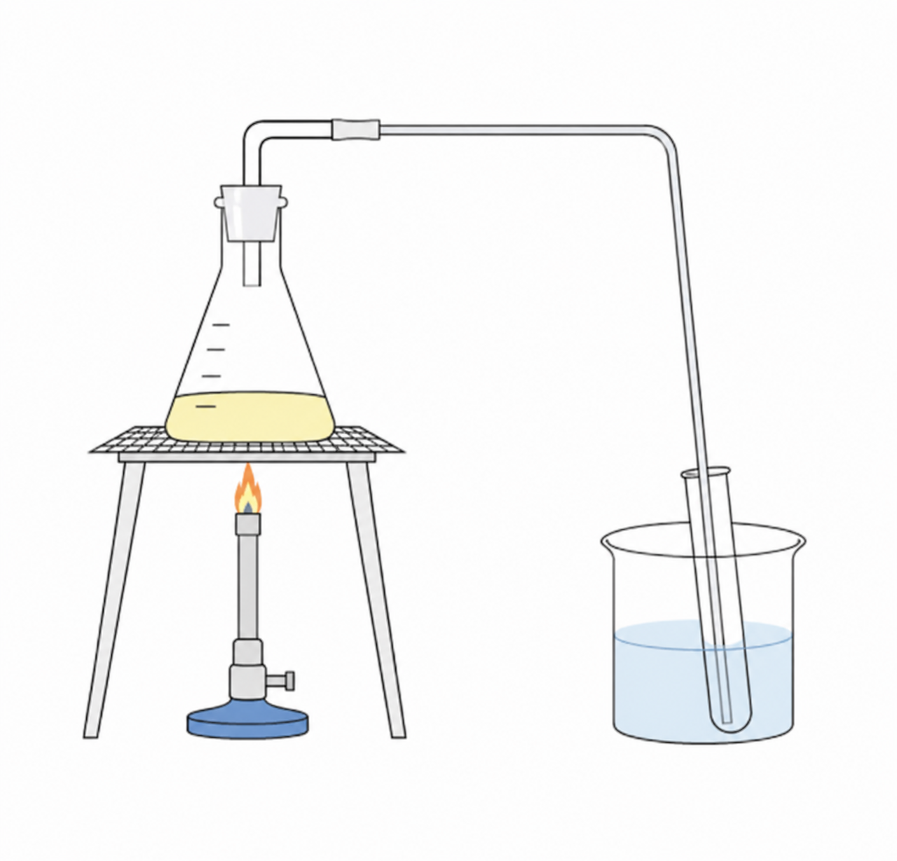

Kort overzicht

Die snijden we in stukjes,
zodat de contactoppervlakte groter wordt.

De mandarijn, de balletjes en de water zitten bij elkaar.
Er zit een waterslot op die wel de koolstof doorlaat maar geen water.

Hierbij scheiden we de alcohol van het water en mandarijnsap,
om de pure ethanol over te houden.
© 2026 Meesterproef. Alle rechten voorbehouden. g3mBV